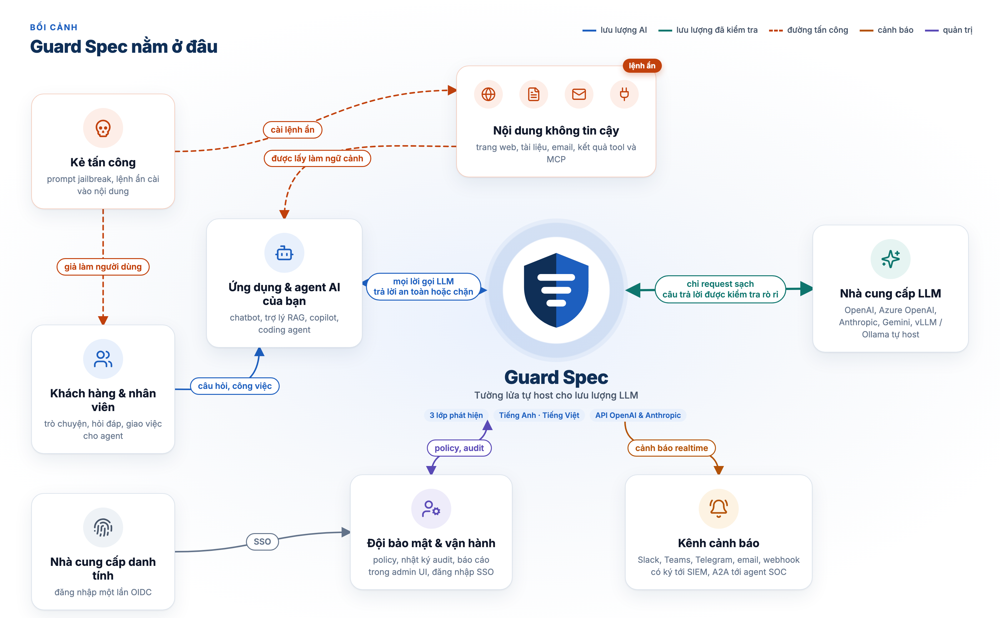

Guard Spec là gateway đặt giữa ứng dụng của bạn và mọi API tương thích OpenAI. Nó kiểm tra prompt, tài liệu truy xuất, kết quả tool và MCP tool ở chiều vào, và câu trả lời của model ở chiều ra. Prompt không bao giờ rời khỏi hạ tầng của bạn.
from openai import OpenAI
client = OpenAI(
# trước đây là https://api.openai.com/v1
base_url="http://guard-spec:8080/v1",
api_key=GUARD_SPEC_KEY,
)
# phần còn lại của code giữ nguyênHTTP 400
{"error": {
"code": "content_filter",
"message": "Request blocked: prompt
injection detected."}}
# LLM không hề được gọiChatbot, trợ lý RAG và agent đưa thẳng nội dung người dùng, trang web, tài liệu và kết quả tool vào model. Bất kỳ nguồn nào trong số đó cũng có thể mang chỉ thị ghi đè chỉ thị của bạn.
Người dùng gõ “bỏ qua mọi chỉ dẫn trước đó” dưới trăm hình thức: leetspeak, ký tự đồng dạng, teencode, tiếng Việt không dấu.
Một trang web, email hay PDF trong kho tri thức giấu chỉ thị trong HTML ẩn, ký tự Unicode tag hoặc mẹo đảo chiều chữ (bidi).
Một MCP server mô tả tool kèm các bước ẩn, bảo agent của bạn đọc bí mật rồi gửi đi nơi khác.
Trỏ base URL của SDK về Guard Spec. Mỗi request được làm sạch, chấm điểm qua ba lớp phát hiện và đối chiếu với chính sách của bạn. Request sạch đi tiếp; request có injection nhận lỗi 400 và sinh cảnh báo.

Loại bỏ ký tự ẩn, Unicode tag và ký tự đảo chiều; đánh dấu bất thường.
Luật nhận dạng nhanh, nhìn xuyên qua dấu tiếng Việt, teencode, leetspeak và ký tự đồng dạng.
Model ONNX do chúng tôi tự huấn luyện cho tiếng Anh và tiếng Việt, chạy ngay trong tiến trình.
So khớp embedding với các mẫu tấn công đã biết, bạn có thể bổ sung thêm.
Luật theo từng tổ chức, biên dịch sang CEL: cho qua, chặn, ghi log hoặc định tuyến.
Bắt link rò rỉ dữ liệu, dữ liệu cá nhân và canary bị lộ, kể cả khi streaming.
Luật, bộ phân loại và tìm kiếm tương đồng được gộp thành một điểm với ngưỡng rõ ràng. Chạy riêng lớp luật hoặc đủ cả ba.
Xây dựng và đánh giá cho cả hai, gồm tiếng Việt có dấu, không dấu, teencode và leetspeak.
Chạy trong hạ tầng của bạn. Không prompt nào bị gửi tới API kiểm duyệt bên thứ ba. Mọi luật đều đọc và sửa được.
Đổi một base URL. Định tuyến tới OpenAI, Azure OpenAI, Anthropic, Gemini, vLLM hoặc Ollama theo tổ chức và dự án.
Request bị chặn được báo qua Slack, Microsoft Teams, Telegram, email, webhook có chữ ký tới SIEM, hoặc agent SOC qua A2A.
Đăng nhập một lần qua OpenID Connect (Entra ID, Okta, Google, Keycloak), xác thực hai lớp TOTP, quy tắc đăng nhập toàn tổ chức.
Tổ chức, dự án, vai trò và API key có giới hạn tần suất, được bảo vệ bởi row-level security của Postgres.
Một dòng cho mỗi request (mặc định không lưu nội dung) và nhật ký mọi thay đổi cấu hình, bảo mật.
Docker Compose, Helm chart và image cho môi trường không internet. Image có chữ ký, SBOM, Prometheus và OpenTelemetry.
Bảng điều khiển song ngữ cho đội bảo mật, có giao diện sáng và tối.

Cả ba lớp với bộ phân loại mặc định, trên bộ đánh giá 2.176 mẫu (1.171 tấn công, 1.005 bình thường; 926 tiếng Anh, 1.250 tiếng Việt).
Cấu hình mặc định có model từ v0.2.1: bộ phân loại v3b và ngưỡng sàn L1, đúng dòng trong bảng Benchmarks của README mà v0.3.0 dùng. Đo ngày 04/11/2026 trên Apple M3 Max, phần ngưỡng sàn L1 đo lại ngày 07/11/2026 với cùng model và dữ liệu; độ trễ là của bộ phát hiện trong tiến trình, không phải toàn bộ vòng HTTP. Dữ liệu tiếng Việt là dữ liệu tổng hợp, và teencode bình thường vẫn bị chặn nhầm 3,5%. README liệt kê đầy đủ các số đo, giới hạn và lệnh để tái lập; trang benchmark (tiếng Anh) so sánh Guard Spec với các bộ phát hiện khác trên dữ liệu công khai, kể cả chỗ Guard Spec kém hơn.
| Loại công cụ | Ví dụ | Guard Spec |
|---|---|---|
| Thư viện guardrail Python | Guardrails AI, NeMo Guardrails, LLM Guard | Một dịch vụ mạng đứng trước model: ngôn ngữ nào cũng dùng được, bạn chỉ đổi base URL chứ không sửa code |
| API phát hiện dạng dịch vụ | Lakera Guard, Azure AI Prompt Shields | Tự host: prompt không rời hạ tầng của bạn, mọi luật đều đọc và sửa được |
| Bộ phân loại độc lập | Prompt Guard, ProtectAI DeBERTa | Bộ phân loại riêng chỉ là một trong nhiều lớp, kèm làm sạch, chính sách, kiểm tra đầu ra và nhật ký kiểm toán |
Bạn cần Docker có Compose v2. Một script tạo bí mật ngẫu nhiên đủ mạnh, kéo image có chữ ký và model (kiểm tra SHA-256), rồi chờ đến khi cả ba lớp sẵn sàng.
$ git clone https://github.com/guard-spec/guard-spec.git
$ cd guard-spec
$ scripts/quickstart.sh
# tạo .env với bí mật ngẫu nhiên
# tải model (≈270 MB, kiểm tra SHA-256)
ready: {"layers":["l1","l2","l3"]}Phát hành ngày . Khi nâng cấp: chạy migration trước (migration 020 thêm bảng scan cache). Cửa sổ hội thoại bật sẵn; đặt CONVERSATION_WINDOW_TURNS=0 để giữ hành vi cũ.
/v1/responses, kể cả streaming, được quét đầu vào, che kết quả tool và kiểm tra đầu ra như chat; /v1/embeddings có key, giới hạn tần suất, chính sách và audit.
Các lượt gần nhất của người dùng được chấm điểm cả khi ghép lại, bật sẵn. Trên bộ kiểm tra mới, chỉ riêng lớp luật đã chặn 24/24 tấn công chia nhỏ và cho qua 12/12 hội thoại bình thường.
Nhiều bản sao gateway dùng chung kết quả quét qua Redis hoặc PostgreSQL, nên phiên agent dài vẫn chạy đúng qua các bản sao và khi khởi động lại. Chỉ lưu điểm số.
Mẫu issue cho lọt lưới và chặn nhầm, nút Báo cáo trong nhật ký request, và quy trình đưa một báo cáo thành dữ liệu huấn luyện hoặc dữ liệu giữ lại để đánh giá.
So sánh tái lập được với các bộ phát hiện khác trên dữ liệu công khai, kể cả chỗ Guard Spec kém hơn, cùng ví dụ chạy được cho OpenAI SDK, LangChain, LlamaIndex, Vercel AI SDK, RAG và n8n.
Công bố làm ứng viên để so sánh ở chế độ shadow: ít chặn nhầm teencode tiếng Việt hơn nhưng bắt được ít tấn công hơn. v3b vẫn là mặc định.
Miễn phí, mã nguồn mở theo giấy phép Apache-2.0. Gắn sao cho repo, thử trên lưu lượng thật của bạn và cho chúng tôi biết nó còn bỏ sót gì.